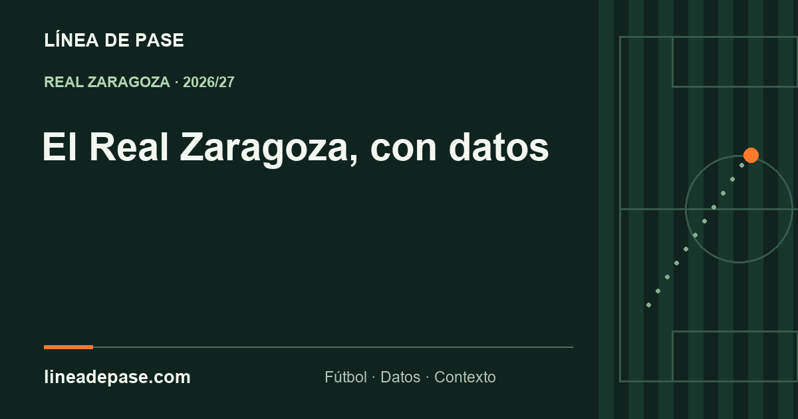
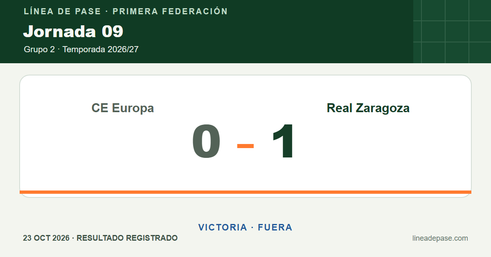
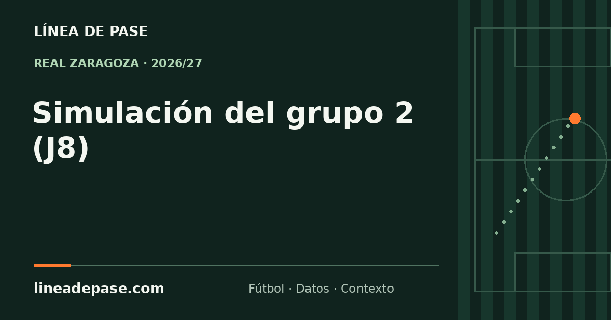
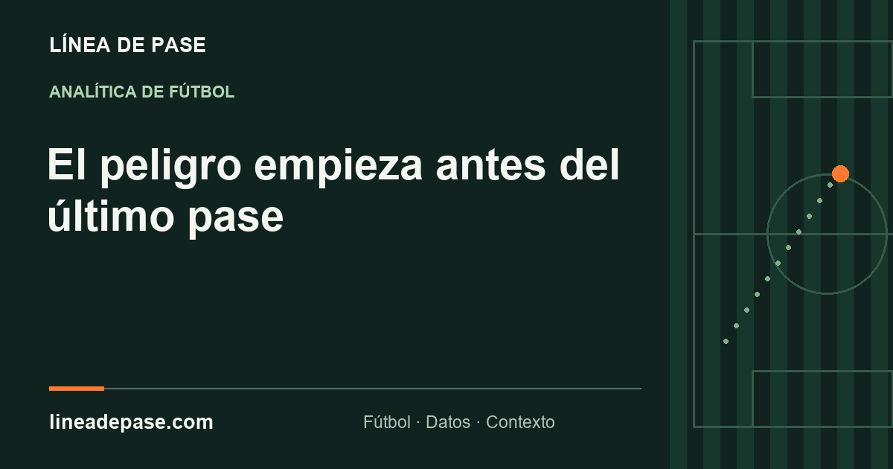
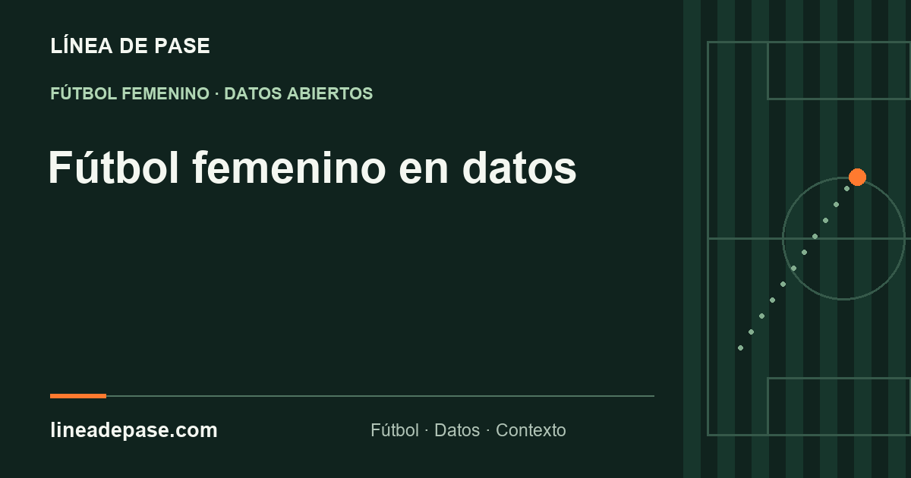
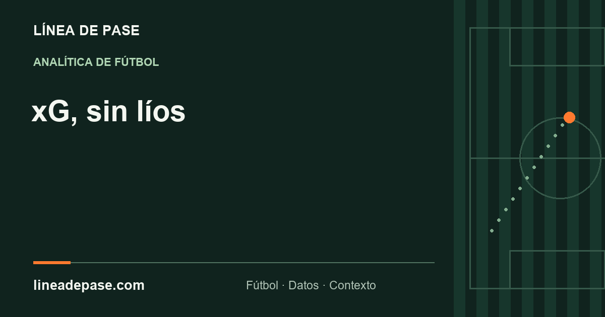
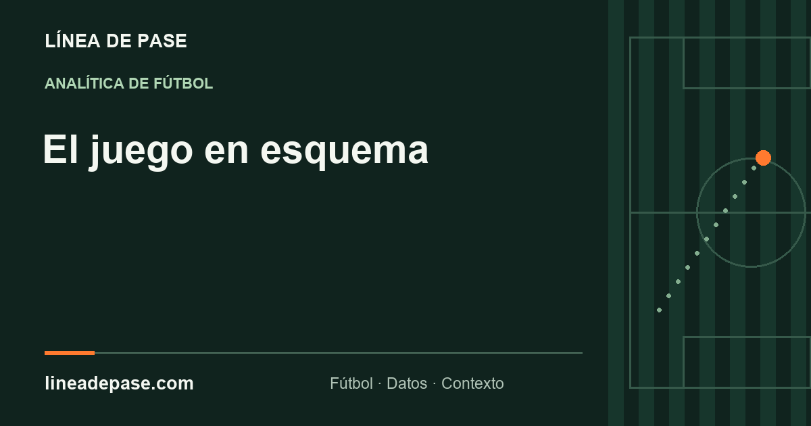
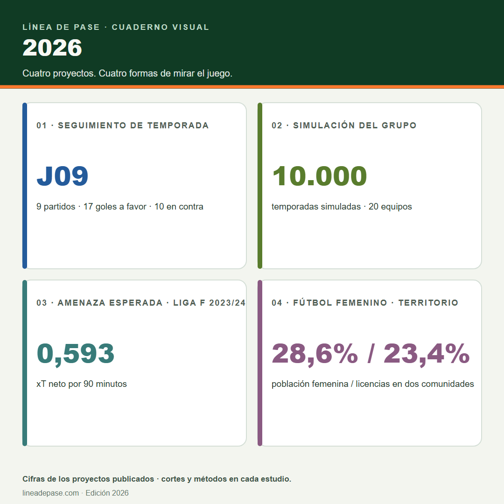

Temporada · Real Zaragoza
Jornada a jornada
Resultados y evolución del equipo en Primera Federación.
Abrir análisis →Explora Línea de pase
Una colección ligera de gráficos, láminas y portadas de los proyectos de Línea de pase.
Una selección de portadas y gráficos propios. Filtra por colección o formato, abre el análisis de origen o descarga la pieza.
Consultar el archivo de gráficos por jornada →
8 piezas

Temporada · Real Zaragoza
Resultados y evolución del equipo en Primera Federación.
Abrir análisis →
Jornada 09 · 23 oct 2026
Marcador final del último partido registrado. La ficha enlaza al análisis y a sus fuentes.
Abrir análisis →
Simulación · Grupo 2
Probabilidades de ascenso, playoff y descenso con método y corte publicados.
Abrir análisis →
Investigación · Liga F
Modelo propio de amenaza esperada con datos de 2023/24.
Abrir análisis →
Fútbol femenino · Territorio
Mapa y tasas de licencias por comunidad autónoma.
Abrir análisis →
Divulgación · xG
Una guía visual para interpretar la calidad de las ocasiones.
Abrir análisis →
Esquemas de juego
Amplitud, presión y transición en un campo didáctico.
Abrir análisis →
Edición visual 2026
Resumen vectorial anual con formatos para redes y una copia lista para imprimir.
Abrir análisis →